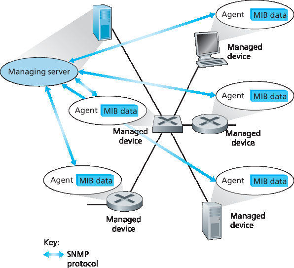
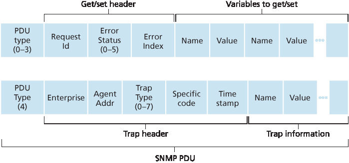

Having now made our way to the end of our study of the network layer, with only the link-layer before us, we’re well aware that a network consists of many complex, interacting pieces of hardware and software —from the links, switches, routers, hosts, and other devices that comprise the physical components of the network to the many protocols that control and coordinate these devices. When hundreds or thousands of such components are brought together by an organization to form a network, the job of the network administrator to keep the network “up and running” is surely a challenge. We saw in Section 5.5 that the logically centralized controller can help with this process in an SDN context. But the challenge of network management has been around long before SDN, with a rich set of network management tools and approaches that help the network administrator monitor, manage, and control the network. We’ll study these tools and techniques in this section.
An often-asked question is “What is network management?” A well-conceived, single-sentence (albeit a rather long run-on sentence) definition of network management from [Saydam 1996] is:
Network management includes the deployment, integration, and coordination of the hardware, software, and human elements to monitor, test, poll, configure, analyze, evaluate, and control the network and element resources to meet the real-time, operational performance, and Quality of Service requirements at a reasonable cost.
Given this broad definition, we’ll cover only the rudiments of network management in this section—the architecture, protocols, and information base used by a network administrator in performing their task. We’ll not cover the administrator’s decision-making processes, where topics such as fault identification [Labovitz 1997; Steinder 2002; Feamster 2005; Wu 2005; Teixeira 2006], anomaly detection [Lakhina 2005; Barford 2009], network design/engineering to meet contracted Service Level Agreements (SLA’s) [Huston 1999a], and more come into consideration. Our focus is thus purposefully narrow; the interested reader should consult these references, the excellent network-management text by Subramanian [Subramanian 2000], and the more detailed treatment of network management available on the Web site for this text.
Figure 5.20 shows the key components of network management:
The managing server is an application, typically with a human in the loop, running in a centralized network management station in the network operations center (NOC). The managing server is the
locus of activity for network management; it controls the collection, processing, analysis, and/or display of network management information. It is here that actions are initiated to control network behavior and here that the human network administrator interacts with the network’s devices.
- A managed device is a piece of network equipment (including its software) that resides on a managed network. A managed device might be a host, router, switch, middlebox, modem, thermometer, or other network-connected device. There may be several so-called managed objects within a managed device. These managed objects are the actual pieces of hardware within the managed device (for example, a network interface card is but one component of a host or router), and configuration parameters for these hardware and software components (for example, an intra- AS routing protocol such as OSPF).
- Each managed object within a managed device associated information that is collected into a Management Information Base (MIB); we’ll see that the values of these pieces of information are
available to (and in many cases able to be set by) the managing server. A MIB object might be a counter, such as the number of IP datagrams discarded at a router due to errors in an IP datagram header, or the number of UDP segments received at a host; descriptive information such as the version of the software running on a DNS server; status information such as whether a particular device is functioning correctly; or protocol-specific information such as a routing path to a destination. MIB objects are specified in a data description language known as SMI (Structure of
Management Information) [RFC 2578; RFC 2579; RFC 2580]. A formal definition language is used to ensure that the syntax and semantics of the network management data are well defined and unambiguous. Related MIB objects are gathered into MIB modules. As of mid-2015, there were nearly 400 MIB modules defined by RFCs, and a much larger number of vendor-specific (private) MIB modules.
- Also resident in each managed device is a network management agent, a process running in the managed device that communicates with the managing server, taking local actions at the managed device under the command and control of the managing server. The network management agent is similar to the routing agent that we saw in Figure 5.2.

Figure 5.20 Elements of network management: Managing server, managed devices, MIB data, remote agents, SNMP
The final component of a network management framework is the network management protocol. The protocol runs between the managing server and the managed devices, allowing the managing server to query the status of managed devices and indirectly take actions at these devices via its agents. Agents can use the network management protocol to inform the managing server of exceptional events (for example, component failures or violation of performance thresholds). It’s important to note that the network management protocol does not itself manage the network. Instead, it provides capabilities that a network administrator can use to manage (“monitor, test, poll, configure, analyze, evaluate, and control”) the network. This is a subtle, but important, distinction. In the following section, we’ll cover the Internet’s SNMP (Simple Network Management Protocol) protocol.
5.7.2 The Simple Network Management Protocol (SNMP)
The Simple Network Management Protocol version 2 (SNMPv2) [RFC 3416] is an application-layer protocol used to convey network-management control and information messages between a managing server and an agent executing on behalf of that managing server. The most common usage of SNMP is in a request-response mode in which an SNMP managing server sends a request to an SNMP agent, who receives the request, performs some action, and sends a reply to the request. Typically, a request will be used to query (retrieve) or modify (set) MIB object values associated with a managed device. A second common usage of SNMP is for an agent to send an unsolicited message, known as a trap message, to a managing server. Trap messages are used to notify a managing server of an exceptional situation (e.g., a link interface going up or down) that has resulted in changes to MIB object values.
SNMPv2 defines seven types of messages, known generically as protocol data units—PDUs—as shown in Table 5.2 and described below. The format of the PDU is shown in Figure 5.21.
The GetRequest, GetNextRequest, and GetBulkRequest PDUs are all sent from a managing server to an agent to request the value of one or more MIB objects at the agent’s managed device. The MIB objects whose values are being requested are specified in the variable binding portion of the PDU. GetRequest, GetNextRequest, and GetBulkRequest differ in the granularity of their data requests. GetRequest can request an arbitrary set of MIB values; multiple GetNextRequests can be used to sequence through a list or table of MIB objects; GetBulkRequest allows a large block of data to be returned, avoiding the overhead incurred if multiple GetRequest or GetNextRequest messages were to be sent. In all three cases, the agent responds with a Response PDU containing the object identifiers and their associated values.
Table 5.2 SNMPv2 PDU types
SNMPv2 PDU Type
Sender-receiver
Description
GetRequest
manager-to-agent
get value of one or more MIB object instances
GetNextRequest
manager-to-agent
get value of next MIB object instance in list or table
GetBulkRequest
manager-to-agent
get values in large block of data, for example, values in a large table
InformRequest
manager-to-agent
inform remote managing entity of MIB values remote to its access
SetRequest
manager-to-agent
set value of one or more MIB object instances
Response
manager-to-agent
generated in response to GetRequest 、GetNextRequest 、GetBulkRequest 、SetRequestPDU or InformRequest
SNMPv2-Trap
manager-to-agent
inform manager of an exceptional event #

Figure 5.21 SNMP PDU format
The SetRequest PDU is used by a managing server to set the value of one or more MIB objects in a managed device. An agent replies with a Response PDU with the “noError” error status to confirm that the value has indeed been set.
The InformRequest PDU is used by a managing server to notify another managing server of MIB information that is remote to the receiving server.
The ResponsePDU is typically sent from a managed device to the managing server in response to a request message from that server, returning the requested information.
The final type of SNMPv2 PDU is the trap message. Trap messages are generated asynchronously; that is, they are not generated in response to a received request but rather in response to an event for which the managing server requires notification. RFC 3418 defines well-known trap types that include a cold or warm start by a device, a link going up or down, the loss of a neighbor, or an authentication failure event. A received trap request has no required response from a managing server.
Given the request-response nature of SNMP, it is worth noting here that although SNMP PDUs can be carried via many different transport protocols, the SNMP PDU is typically carried in the payload of a UDP datagram. Indeed, RFC 3417 states that UDP is “the preferred transport mapping.” However, since UDP is an unreliable transport protocol, there is no guarantee that a request, or its response, will be received at the intended destination. The request ID field of the PDU (see Figure 5.21) is used by the managing server to number its requests to an agent; the agent’s response takes its request ID from that of the received request. Thus, the request ID field can be used by the managing server to detect lost requests or replies. It is up to the managing server to decide whether to retransmit a request if no corresponding response is received after a given amount of time. In particular, the SNMP standard does not mandate any particular procedure for retransmission, or even if retransmission is to be done in the first place. It only requires that the managing server “needs to act responsibly in respect to the frequency and duration of retransmissions.” This, of course, leads one to wonder how a “responsible” protocol should act!
SNMP has evolved through three versions. The designers of SNMPv3 have said that “SNMPv3 can be thought of as SNMPv2 with additional security and administration capabilities” [RFC 3410]. Certainly, there are changes in SNMPv3 over SNMPv2, but nowhere are those changes more evident than in the
area of administration and security. The central role of security in SNMPv3 was particularly important, since the lack of adequate security resulted in SNMP being used primarily for monitoring rather than control (for example, SetRequest is rarely used in SNMPv1). Once again, we see that security—a topic we’ll cover in detail in Chapter 8 — is of critical concern, but once again a concern whose importance had been realized perhaps a bit late and only then “added on.”